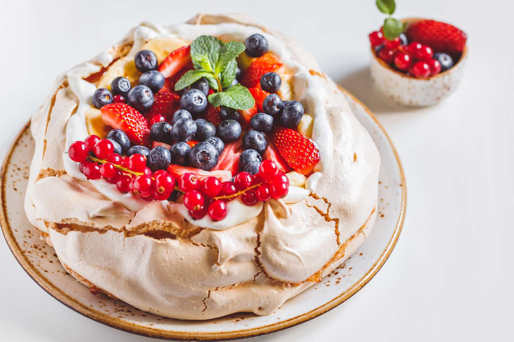

Pavlova

Description
Pavlova is a dessert popular in New Zealand and Australia. It is made from egg whites that are slowly
baked in a relatively cool oven. The egg whites take on a chewy-crisp texture on top, a soft marshmellow
texture inside, and a crunchy crisp texture around the edges. That's three completely different textures
in one single bite. The crunchy edges are just like meringue cookies.
Ingredients
Yield: 4 to 6 servings
- 6 large egg whites
- 1 1/2 cups granulated sugar
- 1 teaspoon vinegar or lemon juice
- 1 1/2 teaspoons corn starch
- 2 teaspoons vanilla extract
Optional Ingredients: Toppings
- 1 1/2 cups heavy whipped cream
- 1/4 cup chopped nuts
- 1 cup berries + other fruits
- Chocolate (Grated)
Steps
- Preheat oven to 200°F and adjust the rack to the lower part of the oven
- Using a pencil, draw an outline of an 8-inch cake pan on parchment paper.
Flip the paper over and place on a cookie tray. Set aside.
- In a stand mixer fit with the whisk attachment, beat the egg whites on low speed until their foamy and little bubbles form.
Continue whisking, gradually bringing the speed up to medium, beating until the egg whites forms soft peaks.
In small additions, begin to gradually beat in the granulated sugar until stiff peaks form and the sugar is almost completely dissolved.*
- Add the cornstarch and vinegar mixture, and the vanilla extract and salt.
Beat on high speed for 4-5 minutes until the meringue is stiff, glossy,
and has no granules of sugar remaining.
- Spoon the meringue onto the parchment paper and, using a cake scraper, form the meringue into a tall cylindrical disk within the 8 inch circle you previously outlined with the cake pan.
Using the cake scraper, create a slight divot in the center of the meringue, like a volcano's center.
Last, use the scraper or a large spoon to shape the sides into desired design.
- Bake in the oven for 1 hour and 30 minutes, then turn off heat, crack the door of the oven so it stays ajar, and allow meringue to sit for an additional hour in the oven.
It is in this hour that the meringue will dry out completely.
Then, remove from oven and allow to cool completely on a wire rack.
- While the meringue is cooling, whip up the topping!
In a stand mixer with a whisk attachment, whip the heavy cream and sugar until soft peaks form.
Spread over the meringue, then top with fresh fruit and nuts if desired.